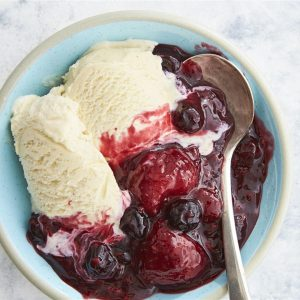

Warm Berry Compote

Description
This berry compote is made in a slow cooker with frozen berries and orange juice. It's a yummy dessert by itself or over ice cream.
Ingredients
- 6 cups frozen mixed berries
- ½ cup white sugar
- ¼ cup orange juice
- 1 ½ teaspoons finely grated orange zest
- 2 tablespoons cornstarch
- 2 tablespoons cornstarch
Steps
- Stir frozen berries, sugar, orange juice, and orange zest together in slow cooker.
- Cover and cook on High untli bubbling, about 1 1/2 hours.
- Stir cornstarch and water together in a cup untli fully dissolved.
- Stir into berry mixture.
- Stir into berry mixture.
- Serve warm or at room temperature.